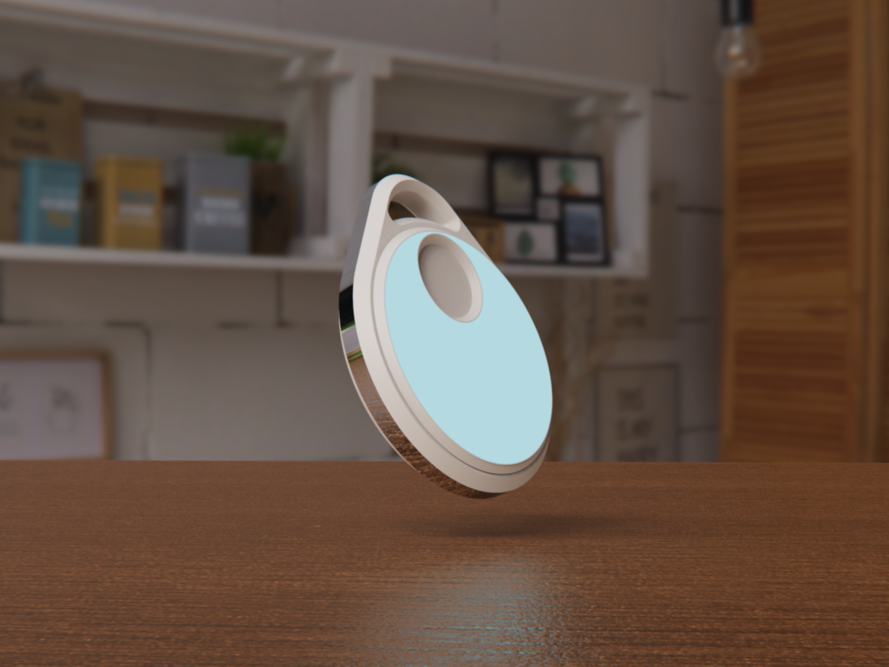
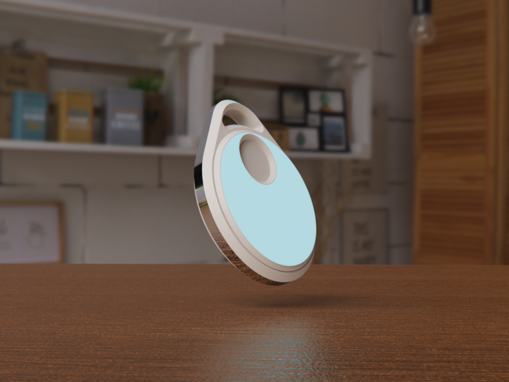

TouchStone
A system of objects that aid in family communication.
Inspired by parent-teen relationships, TouchStone aims to facilitate storytelling and
a deeper sense of connection within families.
This studio project is a response to an increasingly physically isolating culture in a tech-reliant world.
Time
| |
Team |
Individual |
Role |
ID, UX, CMF |
Tools |
SolidWorks, Keyshot, IdeaMaker, FDM Printer, Adobe Illustrator, Figma |


 


Intro: How does it work?
A family diary.
Intended for high-traffic areas in the home such as the dinner table, TouchStone is a checkpoint where family members may leave notes or drawings for others - similar to a communal diary.

Two modes of communication.
Often times, teenagers don't have the energy or ease to fully communicate their thoughts, so Touchstone provides two ways of communication: stress level signaling + drawing/writing.

Snapshot storyboard of the teen's user flow.

Process: Initial Research
What does it mean to be connected?
Half the time spent on this project was research and speaking with families. Here, I asked key questions such as: what is connection? What makes families feel connected? From the parent's side? Children's side? What leads to feelings of disconnection? Etc.
In all, one family (2 teens, 2 parents), 3 other teens, 2 other parents, and a child/teen therapist were interviewed.
Process: Ideation, Usability Testing, Refinement
Ideation: How much freedom should I allow?
Broad ideation included looking into existing items that address this area, asking the users themselves, and waiting for showertime to bless me with a design.
Determining the amount of control over a technology was my main challenge. The product could have been a phone, but blocking certain functionalities helps steer the conversation away from the digital screen.
Light Usability Testing.
Landing on an idea that addressed lowering the barrier for conversation, I user tested with a house of college students (couldn't get a family to test in-person).
It was well-received in that it did facilitate conversations outside the paper and between drawings as well. The students liked to draw, then do a big reveal at the end of their drawing to the others, which I took into mind to make the design more portable. To note, these students may be more comfortable drawing than the average person.